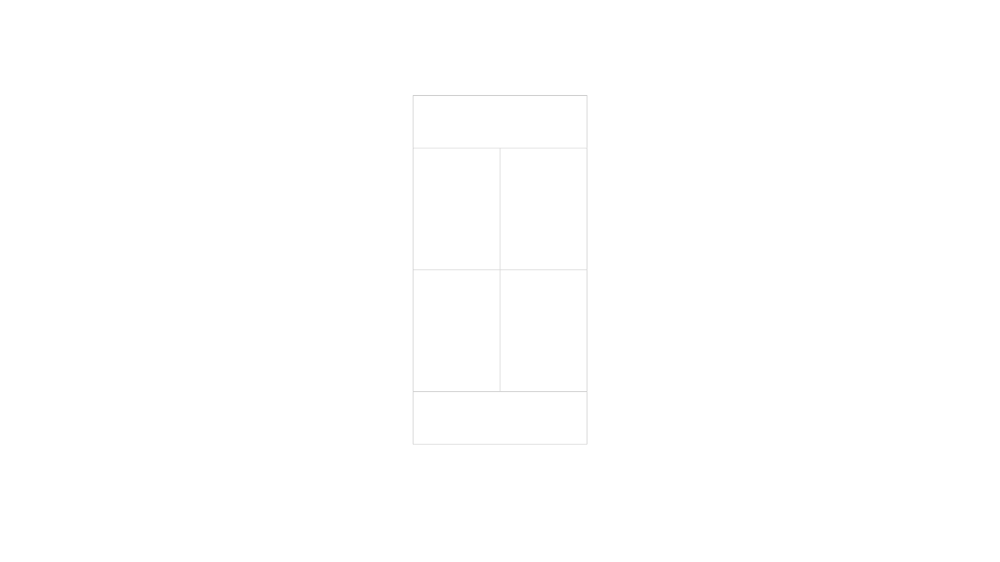
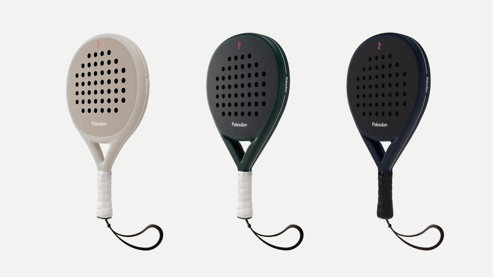
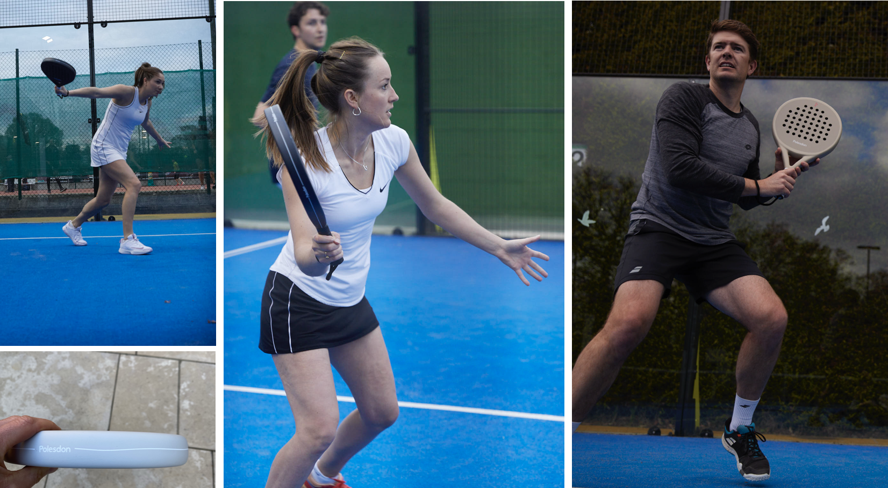
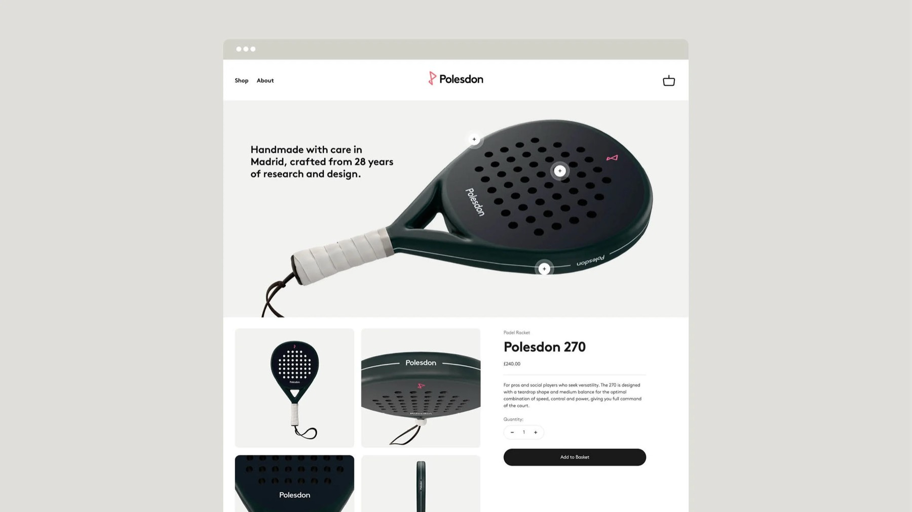
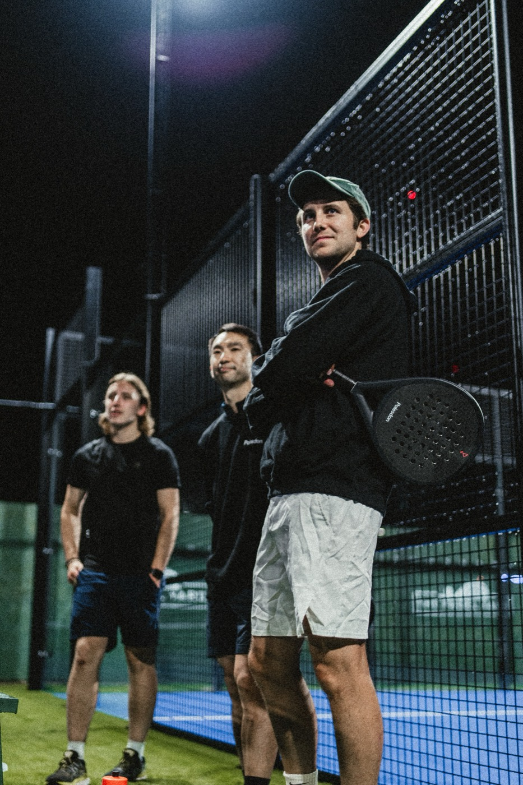
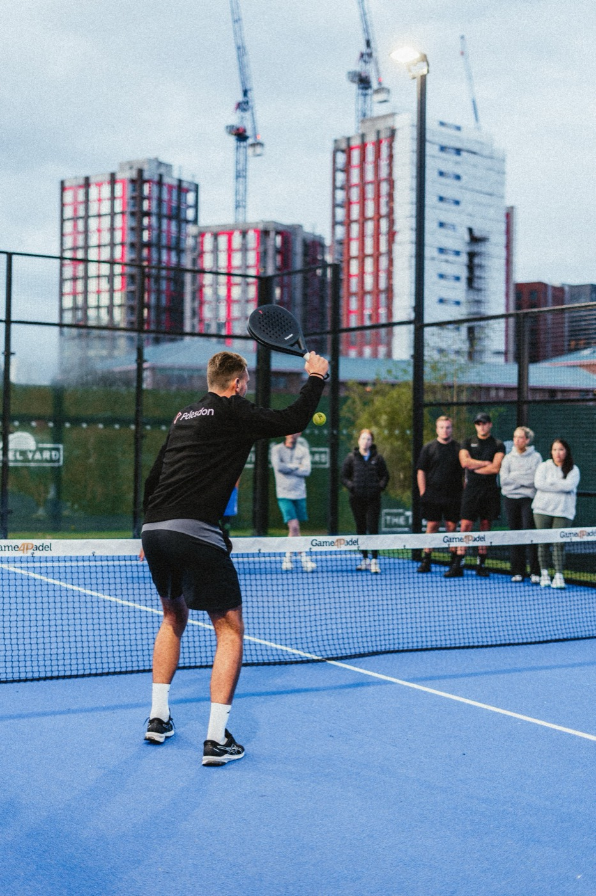

Built and launched a new padel racket brand from scratch.
Identified a gap in a fast-growing market, then built a product end-to-end across performance, lifestyle, and community.
Build for the player the existing brands ignore
I got hooked on padel in 2021, in the market where it was scaling fastest. Court applications were stacking up, but the equipment market was bifurcated: hyper-technical pro brands on one side, legacy tennis names borrowing credibility on the other. The social athlete — performance-minded, design-literate, in it for community — wasn’t being served.
The bet: a racket where design and identity were treated as seriously as performance. Founder, end-to-end — product strategy, MVP scope, sourcing, brand, pricing, channel mix and supply chain.
Sources: International Padel Federation; Lawn Tennis Association (UK); padel industry market research
The biggest padel brands were built for professionals or borrowed credibility from tennis, and ignored everyone in between.
Performance brands
Built for professional players. Hyper-technical, hyper-loud.
Legacy tennis brands
Borrowed credibility. Weak authenticity in padel.
Missing
Social players who care about performance, aesthetics, and identity in equal measure.

Three rackets, not six
Three rackets across two silhouettes, all for the beginner-to-intermediate player. I could have launched six across every combination of shape, weight and balance — but each one adds inventory cost, supply-chain complexity, and a brand that reads “catalogue” rather than “considered.” Three well-made products with clear playstyle deltas would teach more about willingness to pay.

Quality over scalability
A small factory in Spain over cheaper options in China and Morocco. Higher unit cost for craftsmanship and 30+ years of R&D — essential to making the positioning credible from day one.
Speed to market
Get something real into players’ hands rather than chase perfection in a vacuum. Launch a refined MVP and iterate from real-world feedback.
Every prototype went through real players before production
Semi-professional players, UK-ranked coaches and amateurs each tested the prototypes — for feel at competitive level, for handling and durability, and for whether the brand landed with the social athlete.
“The sweet spot feels quite high up on the racket, which makes it feel less balanced overall. It’s probably not going to suit players who want something more forgiving.”Jared · Padel Coach
The aesthetic direction was strongly validated. But players surfaced a clear gap, particularly with the round racket, designed to be more forgiving. Weight distribution and grip feel needed refining for early-stage players.
Translated into requirements — rebalance EVA foam placement to shift weight away from the head, improving control and forgiveness for developing players.

Launched across four channels
Shopify storefront
End-to-end build: photography, content, checkout.
Organic search
SEO from day one: racket category, brand terms, padel content.
Instagram & LinkedIn
Editorial-led content. Player stories, build process, brand voice. Paid targeting to padel interest within 20 miles of UK courts.
Clubhouse partnerships
Pilot placements, member sessions, and informal ambassador outreach with a small set of UK clubs.



A 1.3% storefront conversion, from zero brand equity
For a new brand in a category dominated by established players, this validated willingness to pay at a £200+ price point with zero brand equity, indicating early traction for a design-led positioning in a performance-led category.
Benchmark: UK D2C equipment median ~1.4–1.8%
The first drop validated demand for a design-led entry into the category, but also clarified the requirements for scale: stronger product differentiation beyond design, and support with performance marketing.
Brand identity: Tom Dance · Photography: Sam Robinson